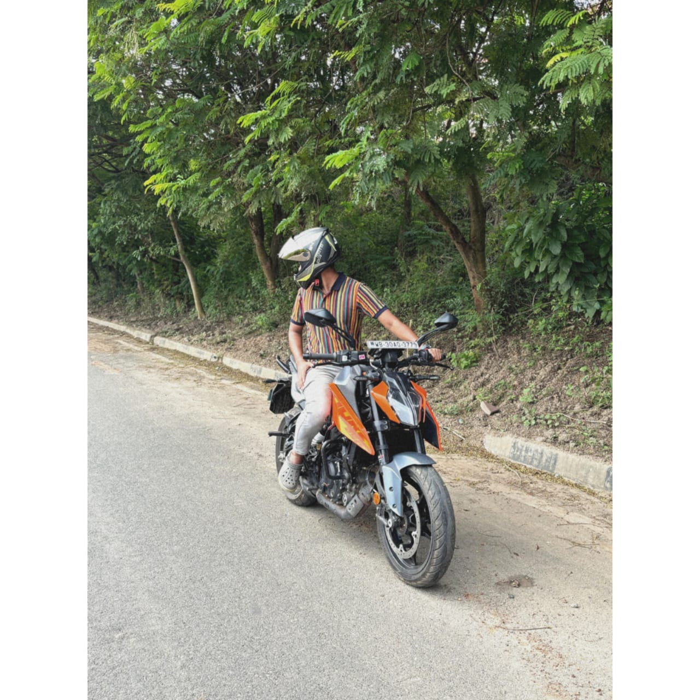

Download My Resume
If you'd like to learn more about my experience and skills, you can
download my resume using the link below:
Download CV
I'm a
Coder
Full Stack Developer
About Me
Welcome to my portfolio! I am a passionate developer with experience in
various technologies. I love solving problems and building innovative
solutions.

Experience and Projects
Completed internship on Internet of Things and Embedded Systems |
Jadavpur University | Jadavpur
-
Gained hands-on experience in various software programs, increasing
proficiency and expanding technical skill set.
-
Developed organizational skills through managing multiple tasks
simultaneously while adhering to strict deadlines.
-
Prepared project presentations and reports.
Data Science Intern | Acmegrade
-
Utilized programming languages such as Python using Anaconda and VS
Code extensively throughout the internship, applying relevant
libraries and frameworks when appropriate.
-
Performed advanced data extraction and data manipulation.
Component Development System (CDS)
-
Developed a comprehensive Trainer Kit Key which includes a 1 Hz
clock using a 555 timer and setting up a voltage regulator.
CERTIFICATION
Python : Completed python workshop from basics to moderate.
TPSDI : Participated in solar PV System Familiarization by TATA.
Certificate for the completion of RDBMS PostgreSQL Training by IIT
Bombay
Skills
-
Languages - C,C++,Python, HTML, SQL
- Data Scientist
-
Technology- Smart Door Lock System, Certificate Tampering Detector
- Full Stack
- Web Development
- Coding
-
Soft Skills- Leadership, Writing Skills, Public Speaking, Time
Management
- Verilog